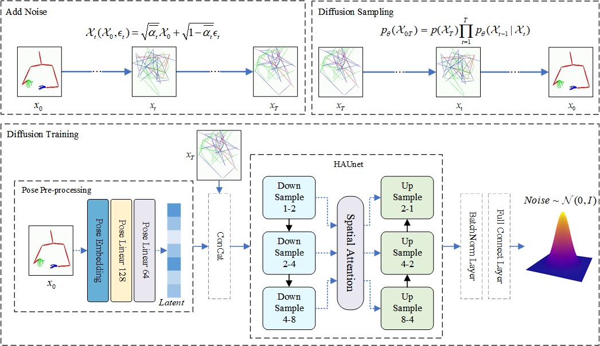
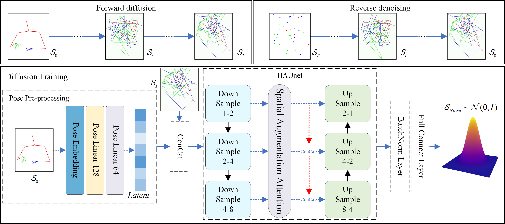

Sign language generation technology plays a crucial role in facilitating communication between deaf and hearing individuals. Current methods primarily utilize Transformers and GANs for generation; however, these methods often face issues with insufficient accuracy and semantic information, resulting in incomprehensible sign language keypoints. This problem arises because existing approaches mainly focus on directly mapping text sequences to skeletal point sequences, emphasizing sequence-to-sequence tasks while neglecting the representation of sign language skeletal points. To address these problems, we propose a self-supervised, two-stage generative framework called Sign-HADiff, which divides sign language generation into two stages. In the reconstruction stage, HAUnet-Diffusion learns the representation of skeletal points through self-supervised learning. In the generation stage, it uses the sign language latent space predicted by the Gloss-Based Latent Space Predictor (GLSP) as a condition to guide HAUnet-Diffusion in generating sign language sequences with more precise skeletal points and higher semantic accuracy. Sign-HADiff consists of two components:
1. HAUnet-Diffusion: We designed a Hierarchical Attention Unet (HAUnet) to replace the Unet structure in Denoising Diffusion Probabilistic Models (DDPM). In HAUnet, we introduced Spatial Augmentation Attention (SAA) and Hierarchical Feature Integration (HFI) to enhance the spatial perceptual information across different feature layers, obtaining more comprehensive skeletal point features and reducing information loss within the Unet structure. 2. GLSP: We developed a Gloss Semantic Enhancer (GSE) that combines a Regional Feature Extractor and a Global Perceptron within GLSP to acquire a semantically richer latent space representation of sign language. Experimental results on the PHOENIX and How2Sign datasets demonstrate that Sign-HADiff generates more accurate sign language skeletal points and outperforms existing methods on standard metrics.
Overview. The Sign-HADiff consists of two main modules: GLSP , and HAUnet-Diffusion. It aims to predict sign language latent space by GLSP and feed them into HAUnet-Diffusion to guide the generation of sign language.

